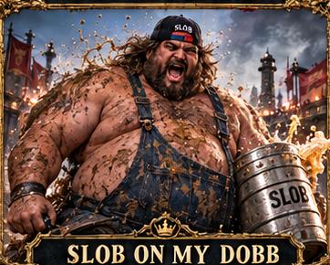
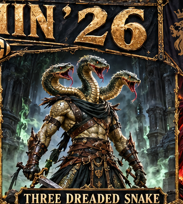

REFERENCE INPUT KIT — NOT GENERATED ART. Exactly two approved subjects. Current canvas1080×1920. No winner chosen.


No Safe Corner Two contenders. Changing angles. No comfortable position. Slob broke for central cover. Paint snapped against the bunker as he slid behind it. Across the lane, TDS moved again. Three protected heads watched three openings. Neither could wait. Every advance gained ground and surrendered protection.
Use COMMISSION.md and layout.json with these exact files. This kit does not certify provider attachment, final results or picture quality.